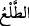
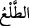
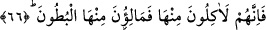
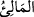
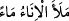
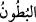
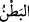
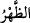
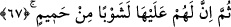

65. Tomurcukları sanki şeytanların başları gibidir.
“Tomurcukları” ve onlardan çıkan meyveleri, son derece çirkin ve korkunç oluşuyla
“sanki şeytanların başları gibidir.”
Burada “tomurcuk” mânâsında olan “__WORD__ kelimesi şekil bakımından ortaklık ve
benzerlik arz ettiği için hurmanın tohumundan mecaz olarak kullanılmıştır. “__WORD__ sanki
kapalı iki pabuç (na’l) gibi hurma ağacından çıkan şeydir. Tomurcuk ve hurma bu iki
pabuç arasında dizili salkımlardır. Zira insanların tabiat ve inançlarına göre şeytanın
sûreti sûretlerin en çirkini ve en sevimsiz olanıdır. Bundan dolayı insanlar bir şeyi çok
çirkin ve sevimsiz olarak niteledikleri zaman her ne kadar şeytanı görmemişlerse de
“sanki şeytandır” derler. Burada zakkum ağacının tomurcuk ve meyvelerini şeytanların
başlarına benzetmek çok güzel bir şeyi meleğe benzetmek gibidir. Allah Teâlâ Yusuf
(a.s.)’ın güzelliğini müşâhede eden Mısırlı kadınlardan hikaye ederek şöyle buyuruyor:
“Bu ancak üstün bir melektir!” (Yûsuf 12/31).
Bu âyetin işârî yorumu şudur: Bu dünyada mâlûmat ve bilgisi şeytanların sıfatları gibi
çirkin olanların ahirette karşılarına çıkacak olan şey de şeytanların sûret ve suratları
gibi çirkin olur.
66. (Cehennemdekiler) ondan yerler ve karınlarını ondan doldururlar.
“(Cehennemdekiler) ondan” yani zakkum ağacından ve onun tomurcuk ve
meyvelerinden “yerler ve” çok aç oldukları için yahut istemeseler dahi yemeye
zorlandıkları için “karınlarını ondan doldururlar.”
Bu âyetin işârî yorumu şudur: Kâfirler dünya tarlasına ne ekmişlerse âhiret
harmanında da onu biçeceklerdir. Onlar dünya tarlasında bunu ekmişlerdi, şimdi de
ahiret harmanında ektiklerini biçmektedirler. “__WORD__ kelimesi, “__WORD__ ifadesindeki
fiilin kökünden gelen ismi faildir. “__WORD__ kelimesi, “__WORD__ kelimesinin çoğulu olup her
şeyde “__WORD__ (sırt) kelimesinin zıddıdır.
67. Sonra zakkum yemeğinin üzerine onlar için, kaynar su karıştırılmış bir içki
vardır.
Karınlarını doldurup doyduktan “Sonra” iyice susadıkları ve uzun süre su istedikleri
için “zakkum yemeğinin üzerine onlar için, kaynar su karıştırılmış bir içki vardır.”